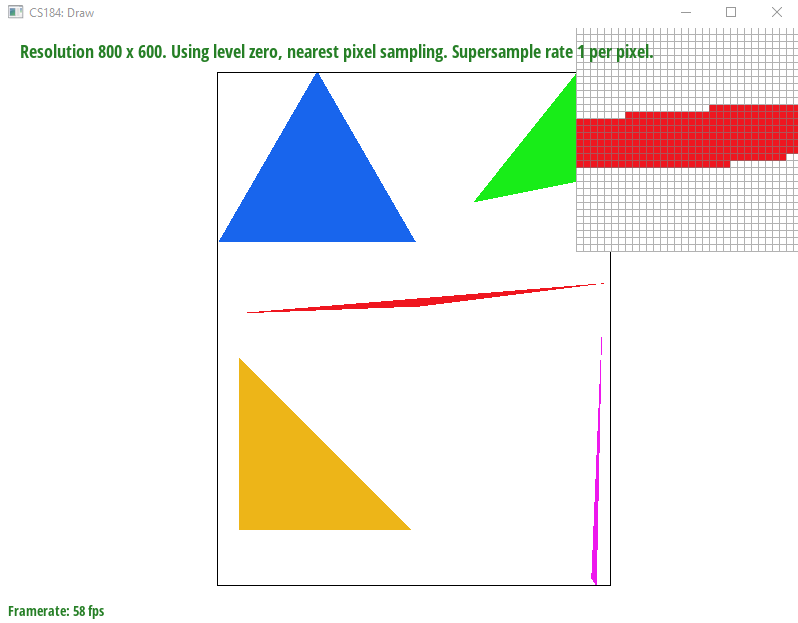
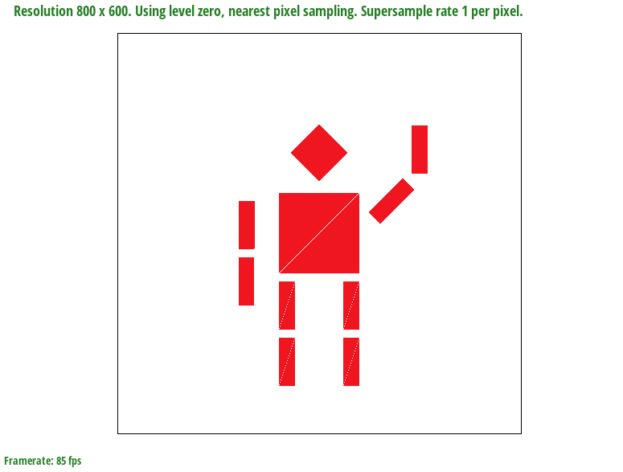
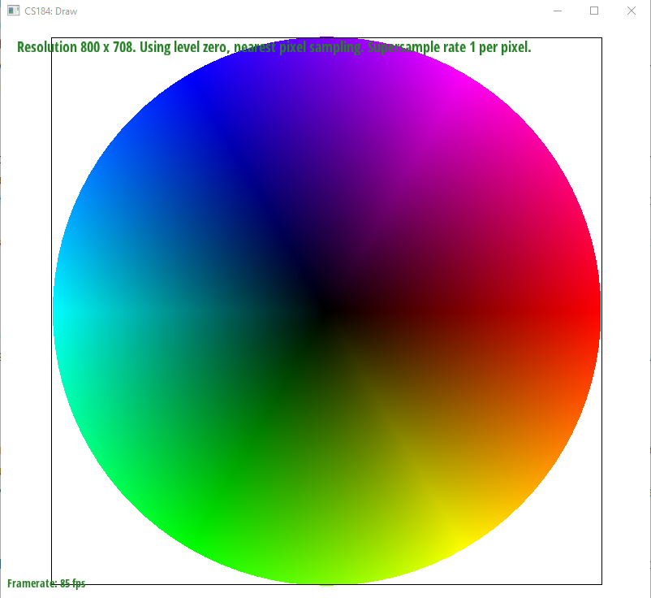
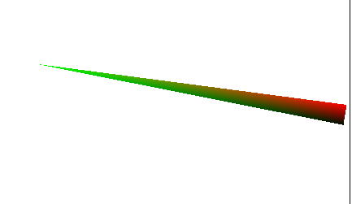

First, I found the left most and right most coordinates, as well as finding the bottom and top most y coordinates. This is used to defined a region in which we will rasterize triangle.
I defined a helper function which performs the line test given a point and 2 other and determine whether the point is inside a triangle.
I perform the line test 3 times to cover (P1, P2), (P2, P3), (P3, P1) pairs, and if all 3 results in a positive value, we know that the point is inside the triangle. Otherwise, it is not.
My algorithm only checks points that are bounded within the 3 provided points, so it just checks pixels within a box using the values of the 3 provided points.

Basic Triangle rasterization
Task 2: Antialiasing by Supersampling
I added 2 additional for loops to rasterize_triangle which samples the subpixels within each pixel using the step size of 1/sqrt(sampling_rate).
I modified the set_framebuffer_target() and set_sample_rate() such that the resize also accounts for sample rate.
I added the same 2 for loop from rasterize_triangle into resolve_to_framebuffer() such that it adds all the values of the subpixels and divide by the sample rate.
My algorithm only checks points that are bounded within the 3 provided points, so it just checks pixels within a box using the values of the 3 provided points.
I intended the cubeman to be waving his right hand. I did this by modifying the translation of the right arm, and rotation.

Cubeman wave right hand
Task 4: Barycentric Coordinates
Barycentric coordinates is a coordinate system that determines how similar a particular point is with the 3 vertices that determines the triangle. For example,
if a point is directly on one of the vertices, then we know that it is exactly the color defined at that corner. However, if a point is in the center of the triangle,
then it will be a mix of all three vertex color.

Test 7

Illustration of Barycentric coordinates
Task 5: "Pixel sampling" for texture mapping
Pixel sampling is when we do sampling in the uv space where the function we use is bilinear_sample or nearest_sample.
First I compute the barycentric coordinates, and then get the uv coordinates by multiplying u0,u1,u2 with alpha, beta, gamma respectively. We do the same for v values.
Then, we pass it into the bilinear/nearest function to get the texture for that coordinates, and update it in our sample_buffer.
Task 6: "Level sampling" with mipmaps for texture mapping
Level sampling is when you transform your pixels into the uv space, and we determine the length of the projection between the pixels which determines which level we are.
If it is 1:1, then we are on the high resolution. If not, then we go into lower resolution.
I modified the rasterize textured triangle such that we create a SampleParsm struct passing in the uv vector, dx_uv, and dy_uv vectors following
the definitions defined in the spec.
I implemented the sample() function to take in the SampleParams and we check if it is L_ZERO, if so this reduces to Task 5.
If L_NEAREST, we get the level by calling getlevel() in the SampleParams. And we call sample bilinear/nearest on the level.
If L_LINEAR, we get the level by calling getlevel(), and we floor/ceil it to get a range of levels value. Then, we just lerp the min, max and s value.
For all the methods, as we increase the sample_rate, we would have to store more samples so our memory will be a lot more, and similarly, we would also have to sample more points per pixel thus slowing down our
rendering. We know that increasing sample_rate will provide antialiasing effect on our images.
Pixel sampling is faster than level sampling since we only use lerp three times when we use bilinear sampling, and if we use nearest sampling, it is fast but the render becomes blocky where you can see each pixels.
Level sampling is a lot slower since we have to perform at most 7 lerps which is slow, and if we combine it with high sample_rate, it becomes even slower. But using trilinear sampling will result in the best antialiasing combined with
high sampling rate.